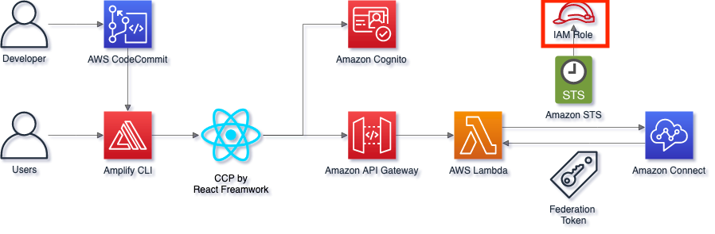
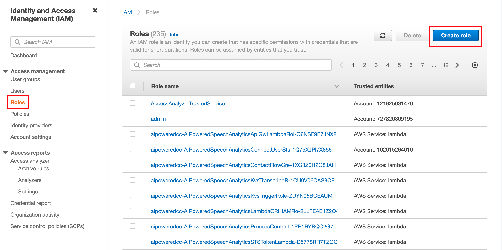
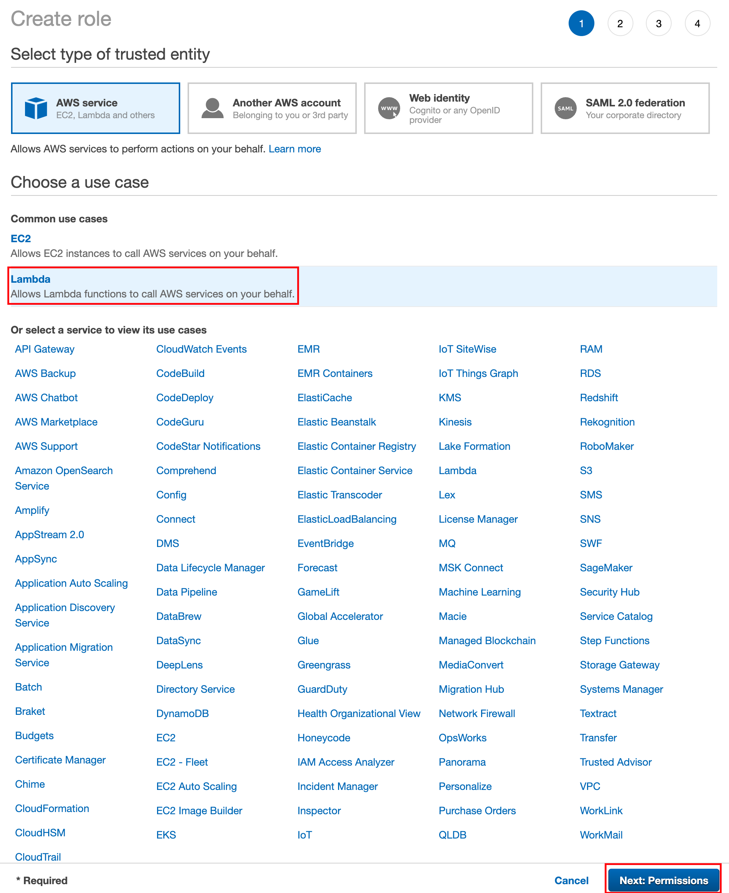
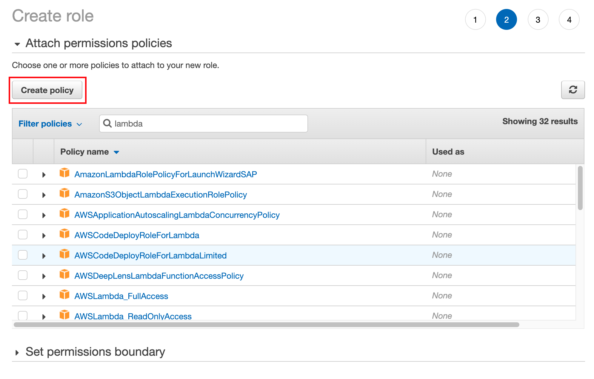
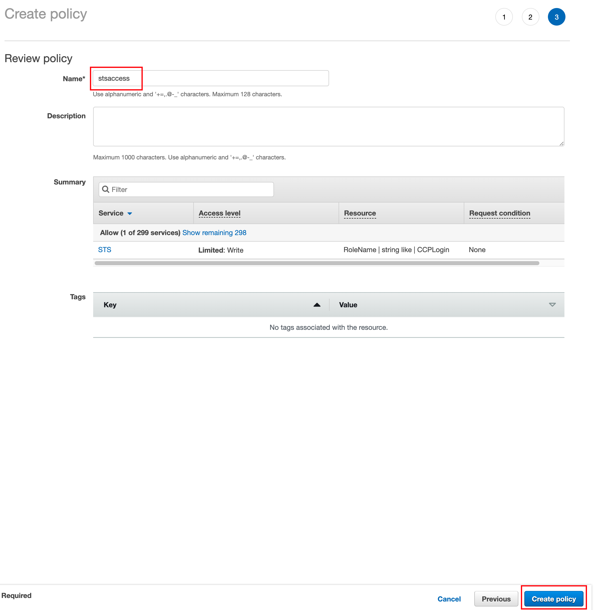
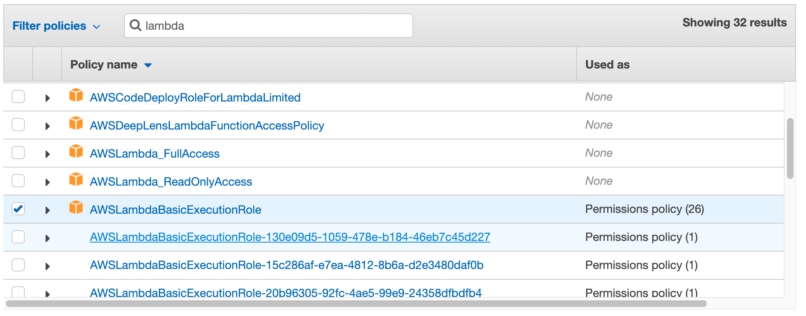
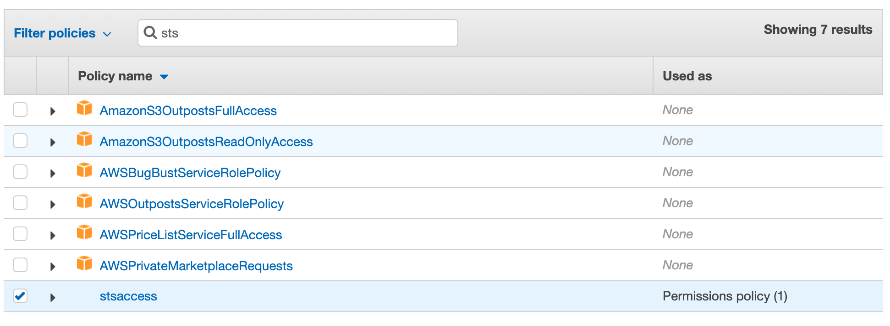
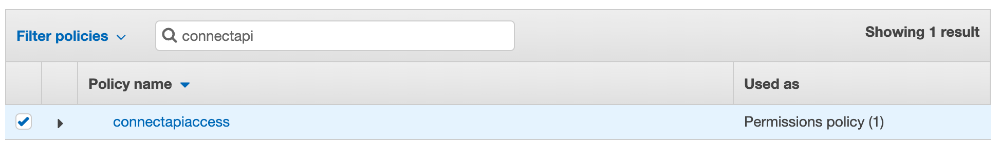
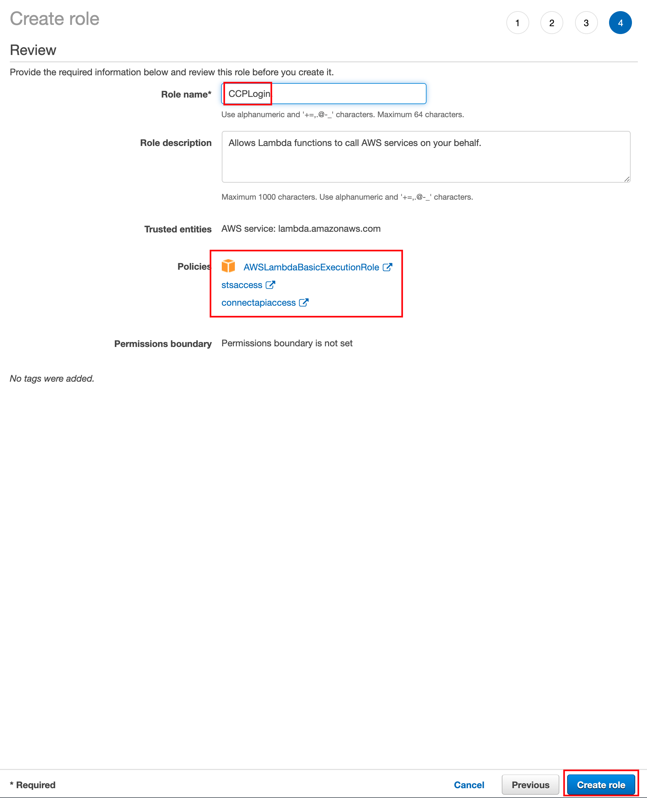

Lambda Function 생성 전에, Lambda 함수가 가져야하는 권한을 설정하도록 합니다. AWS 에서는 권한을 Role 이라는 개념으로 정의합니다. 적절한 Role 을 가져야만 Lambda 함수가 다른 서비스를 사용하여 SAML Login 에 필요한 Federation Token 을 생성할 수 있습니다.
IAM 서비스로 이동하여 Roles 메뉴를 선택하고 Create role 버튼을 클릭합니다. 
Trusted entity 로 Lambda 서비스를 선택합니다. Role 을 사용하는 주체가 되는 서비스로 Lambda 를 선택하는 것 입니다. Lambda function 내에서 여러 서비스 (e.g. STS, Connect) 를 사용할 것이므로, Lambda 입장에서 해당 서비스를 사용할 수 있는 권한을 Role 로 정의하는 것 입니다. 이후 Next:Permissions 버튼을 클릭합니다. 
Create policy 버튼을 클릭합니다. 
Policy 는 권한의 종류와 세부 내용의 설정입니다. 기본적으로 만들어진 Policy 도 있지만, 2가지 Policy 를 임의로 만들도록 합니다.
{
"Version": "2012-10-17",
"Statement": [
{
"Action": "sts:AssumeRole",
"Resource": "arn:aws:iam::[어카운트번호]:role/CCPLogin",
"Effect": "Allow"
}
]
}
Tag 는 별도로 지정하지 않고 하단의 Next:Review 버튼을 클릭합니다.
아래와 같이 Policy 이름(stsaccess)을 지정하고, Create policy 버튼을 클릭하여 Policy 생성을 완료합니다.

하나의 Policy 를 더 생성합니다. 3~6번을 반복합니다만, 아래의 JSON 코드를 사용하고 Policy 이름은 connectapiaccess 로 지정합니다.
{
"Version": "2012-10-17",
"Statement": [
{
"Sid": "VisualEditor0",
"Effect": "Allow",
"Action": "connect:GetFederationToken",
"Resource": "arn:aws:connect:[Connect인스턴스리전]:[어카운트번호]:instance/[인스턴스ID]/user/*"
}
]
}
2가지 Policy 생성을 완료했으면, 아래와 같이 생성한 Policy 2가지와 AWSLambdaBasicExecutionRole 을 선택합니다. (왼쪽의 체크박스를 체크합니다.) Next:Tags 버튼을 클릭하여 다음으로 이동합니다.   
Next:Review 버튼을 클릭하여 다음으로 이동합니다.
Role name 은 CCPLogin 으로 지정하고, Policies 가 화면에 표시된대로 총 3개가 맞는지 확인합니다. (혹시 잘못됐다면, Previous 버튼을 클릭하여 이전 단계로 이동후 수정할 수 있습니다.) 이후 Create role 버튼을 클릭하여 Role 생성을 완료합니다.
